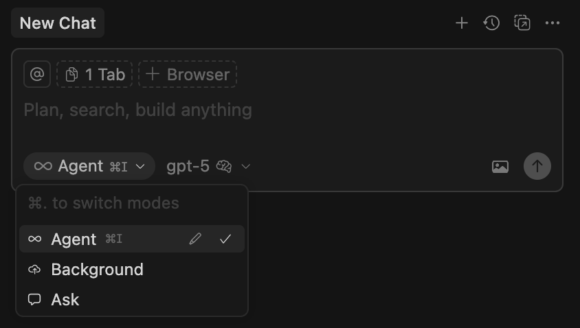

101 Cursor AI
Learning to use for Java Enterprise projects
“Quality comes not from inspection, but from improvement of the production process.”
- W. Edwards Deming
"If you can't describe what you are doing as a process, you don't know what you're doing."
- W. Edwards Deming
"Trust, but verify"
- Russian proverb
"Visteme despacio que llevo prisa"
- Carlos III
Who I am
|
|
Juan Antonio Breña Moral Technical Product Owner for Engineering Shared Platform @ Atradius CIO
Twitter | Github | LinkedIn |
|
Quotes: "Lead me, follow me, or get out of my way." "Pressure makes diamonds." - George S. Patton Jr. |
|

This talk couldn't age well over time.
Poll
Can you raise your hand ✋, if you use Intellij Idea Ultimate?

Poll
Can you raise your hand ✋, if you have tried Cursor AI?
Agenda
- Who I am
- Context
- Reviewing the IDE I
- Reviewing the IDE II
- Demo
- Value proposition
- Impact in Agile workflows
- Takeaways
- References
- Q&A
Agenda
- Who I am
- Context (5min)
- Reviewing the IDE I (5min)
- Reviewing the IDE II (25min)
- Demo (10min)
- Value proposition (5min)
- Impact in Agile workflows (5min)
- Takeaways (5min)
- References
- Q&A
Context
ThoughtWorks Radar 2025Q1 // Tools
 Source: https://www.thoughtworks.com/radar/tools/summary/cursor
Source: https://www.thoughtworks.com/radar/tools/summary/cursor
 Source: https://www.infoq.com/articles/architecture-trends-2025/
Source: https://www.infoq.com/articles/architecture-trends-2025/
Reviewing the IDE I
Cursor version used for the talk:

Reviewing the IDE I
General idea about Cursor:

Reviewing the IDE I
Why?
Add new tools in large companies is a hard task.
So, share some enterprise features is a good way to facilitate the adoption of a new tool.
Reviewing the IDE I
- Security features
- Privacy mode
- Trust
- Enterprise features
- Business account
- Budget management
- Team management
- Team metrics
- Product evolution
- Velocity
Reviewing the IDE I
- Security features
- Enterprise features
- Product evolution
Reviewing the IDE I
- Security features
- Privacy mode
- Trust
Privacy mode

Note: with a Pro account, the developer needs to disable. But with a Business account, this feature is handle at the organization level.
Source: https://www.cursor.com/privacyTrust
Cursor operates a continuously monitored and 3rd-party audited security program.

SOC 2 is a compliance framework used to evaluate and validate an organizations
information security practices.
Reviewing the IDE I
- Enterprise features
- Business account
- Budget management
- Team management
- Team metrics
Business account

- Enforce privacy mode org-wide
- SAML/OIDC SSO
Budget management
Set a monthly budget for the team:

Team management
Set up your team:

Team metrics
How much your team are using Cursor?

Product evolution
- Velocity
Velocity
Cursor Dev team delivers new features every 1/2 weeks. (Lighweight patches) üî•üî•üî•
git rev-list --count HEAD \
-- docs/images/review/cursor-version.png
git log --pretty=format:"%ad" --date=iso \
-- docs/images/review/cursor-version.png
Source: https://www.cursor.com/changelog
Reviewing the IDE I
Summary
- Using business accounts for enterprise scenarios has features to enforce to not upload customer data
- Using business accounts has features to define a Monthly budget for your team.
- Cursor is audited by 3rd parties. (SOC2)
- PRO accounts are nice to begin, OSS and for side projects. (Limited time / Limited Premium requests required)
Reviewing the IDE II
- Developer features
- Tab model
- Review changes (Cursor PR)
- Context features
- Settings
- Models
- Cursor rules
- Modes (Agent, Ask, Manual)
- Symbols
- MCP Servers
Reviewing the IDE II
General idea about Cursor:
Reviewing the IDE II
WHY
Discover the new features were added to a specific IDE product in compare with tradictional IDEs, with the idea to perceive the benefits.
Reviewing the IDE II
- Developer features
- Tab model
- Review changes (Cursor PR)
Tab model
Tab completion in Cursor is powered by advanced AI models that understand your code context. As you type, you'll receive intelligent suggestions that:
- Complete your current line of code
- Suggest entire function implementations
- Help with common patterns and boilerplate
- Adapt to your coding style over time
Source: https://www.cursor.com/blog/tab-update
Review changes

Note: If your are going to implement a complex tasks with the help of a LLM, please commit previous work.
Source: https://docs.cursor.com/chat/applySource:https://dev.to/mollynem/git-github--workflow-fundamentals-5496
Reviewing the IDE II
- Context features
- Settings
- Models
- Cursor rules
- Modes (Agent, Ask, Manual)
- Symbols
- MCP Servers
Settings / Codebase Indexing

Note: Review the usage of .cursorignore file to avoid indexing sensitive data.
Source: https://www.cursor.com/security#codebase-indexingSettings / Docs

Help Cursor with the right documentation associated with your project/repository.
Source: https://docs.cursor.com/context/@-symbols/@-docs#docsModels
Cursor provides access to main Commercial LLMs
Source: https://docs.cursor.com/settings/models
Cursor rules
Using rules in Cursor you can control the behavior of the underlying model. You can think of it as instructions and/or a system prompt for LLMs.
Source: https://docs.cursor.com/context/rulesCursor rules
Analogy: In the organizations, exist a specific expert set of roles with the title of IT Champions who define the guidelines for a specific Technology, in our case Java.
Cursor rules
| Rule Type | Description |
|---|---|
| Always | Always included in the model context |
| Auto Attached | Included when files matching a glob pattern are referenced |
| Agent Requested | Rule is available to the AI, which decides whether to include it. Must provide a description |
| Manual | Only included when explicitly mentioned using @ruleName |
Source: https://docs.cursor.com/context/rules
Cursor rules
Where I can find cursor rules?
Note: The previous links share .cursorrules files.
Note: Now, it is possible to create your own rules from Cursor.
Cursor rules
Where I can find specific cursor rules for Java?
How to apply them in my repository? $(pwd).cursor/rules
sdk install jbang
jbang cache clear
jbang catalog list jabrena
jbang setup@jabrena init --cursor java
If you have good ideas, PRs are welcome. üôèüôèüôè
Modes
Natural language interface for exploring, editing, and managing code with contextual AI assistance in Chat mode.
Source: https://docs.cursor.com/chat/overviewAsk Mode
- Ask questions about specific code sections
- Get explanations of complex functions
- Find code patterns and examples
- Discover and understand your codebase
Ask Mode
| 2000's | 2010's | 2024+ |
|---|---|---|
| Books | Google, StackOverflow, Blogs, etc... | ChatGPT, Cloude, Gemini... |
Agent Mode
- Make codebase-wide changes and refactoring
- Implement new features from requirements
- Debug complex issues across multiple files
- Generate tests and documentation
- Maintain consistency across your entire project
Agent Mode
Example to fix a test:
Agent Mode
Example for prototyping:
 Source: https://x.com/mpetyx/status/1912428437077184670
Source: https://x.com/mpetyx/status/1912428437077184670
Symbols
You can help LLMs increasing awareness linking to the prompt, aspects like: Java classes, Diagrams (Images/Text), Logs with Error traces, etc.
 Source: https://docs.cursor.com/context/@-symbols/overview
Source: https://docs.cursor.com/context/@-symbols/overview
MCP Severs

Model Context Protocol (MCP) is an open protocol that standardizes how applications provide context to LLMs.
Source: https://modelcontextprotocol.io/introductionMCP Severs
Think of MCP as a plugin system for Cursor:
 Source: https://docs.cursor.com/context/model-context-protocol
Source: https://docs.cursor.com/context/model-context-protocol
MCP Severs
 Source: https://github.com/search?q=mcp-server&type=repositories&s=stars&o=desc&p=1
Source: https://github.com/search?q=mcp-server&type=repositories&s=stars&o=desc&p=1
MCP Severs
How to configure MCP:

MCP Severs
How to configure MCP: (~/.cursor/mcp.json)
{
"mcpServers": {
"Stopwatch MCP": {
"command": "jbang",
"args": [
"stopwatch-mcp@jabrena"
]
},
"jvminsight": {
"command": "jbang",
"args": [
"jvminsight@mcp-java"
]
}
}
}
MCP Severs
Where I can find useful MCP Servers?
Where I can find useful MCP Servers in Java?
- https://mcp-java.github.io/ (jvminsight, kubernetes, containers, filesystem, jdbc)
- https://github.com/brunoborges/jvm-diagnostics-mcp
- https://github.com/jdubois/azure-cli-mcp
- https://github.com/stephanj/MCPJavaFileSystem
- https://github.com/stephanj/GitHubMCP
- https://github.com/microcks/microcks
MCP Severs

- Verify the sources of your local MCP servers
- Verify that you are using local MCP servers closed releases
Reviewing the IDE II
Summary
- Cursor Ask mode reduces time in order to solve doubts and Cursor Agent mode is a game changer to implement tasks in an unattended way.
- Cursor has several ways to facilite the context to LLMs.
- Cursor Rules is a new way to customize the LLMs behaviour.
- MPC Servers has the potential to help in some Dev actions that previously required manual actions.
Demo
- Scenario
- Detailed prompts
- Tasks management
Scenario
The starting point:
Feature: Greek Gods API
As an API consumer
I want to retrieve information about Greek gods
So that I can use this data in my application
Background:
Given the Greek Gods API service is running
And the API base URL is "http://localhost:8080"
Scenario: Successfully retrieve all Greek gods
When I send a GET request to "/api/v1/gods/greek"
Then the response status code should be 200
And the response should be in JSON format
And the response should contain a list of Greek gods
And each god in the response should have the following attributes:
| attribute | type |
| id | integer |
| name | string |
...

Detailed prompts
Develop a new Microservice requires to review multiple aspects:

 Source: https://datarob.com/essentials-software-development-life-cycle/
Source: https://datarob.com/essentials-software-development-life-cycle/Source: https://developers.redhat.com/blog/2016/12/09/spring-cloud-for-microservices-compared-to-kubernetes
Detailed prompts
And model the solution and adhere to an architectural approach. (Example: C4 Model)

docker run -it --rm -p 9000:8080 -v \
$(pwd)/structurizr:/usr/local/structurizr \
structurizr/onpremises:2024.12.07
open http://localhost:9000
Source: https://c4model.com/Source: https://structurizr.com/
Detailed prompts
C4 Model Source: https://c4model.com/
Source: https://c4model.com/
Detailed prompts
C4 Model
Detailed prompts
C4 Model
Detailed prompts
C4 Model
Detailed prompts
UML Sequence Diagram
Detailed prompts
And gather all the required information to build the new service:
- UML Sequence Diagram about the system
- Gherkin scenarios
- Open API Specification for the new service
- Open API Specification for the third party service
- Database schema design
Detailed prompts
If you decide to start a development using a Prompt, you should reduce the ambiguity in some technical decisions delegated to the LLM to increase the code quality generated, less loops and less tokens.
Detailed prompts
Some technical decisions in Spring Boot projects:

Detailed prompts
Some technical decisions in Quarkus projects:

Detailed prompts
Use the @20250320-1.md as Prompt and analyze implement & test the following images to understand the required development.


Detailed prompts
Detailed prompts are fine, but exist executions where the LLMs enter in severals loops. (It is not a 100% reliable process for large prompts)
 Source: https://x.com/nateparrott/status/1913204957043425395
Source: https://x.com/nateparrott/status/1913204957043425395
Detailed prompts
So..
How to solve the problem with large prompts and have the capacity to interact more in the process?
Tasks management
Just stop saying "one shot"
 Source: https://x.com/ryancarson/status/1913204957043425395
Source: https://x.com/ryancarson/status/1913204957043425395
Tasks management
Change the point of view: From a large prompt to a set of tasks.
 Source: https://www.scrum.org/resources/blog/what-iterative-incremental-delivery-hunt-perfect-example
Source: https://www.scrum.org/resources/blog/what-iterative-incremental-delivery-hunt-perfect-example
Tasks management
How to apply them in my repository? $(pwd).cursor/rules
sdk install jbang
jbang cache clear
jbang catalog list jabrena
jbang setup@jabrena init --cursor tasks
Many thanks to @EyalToledano, @elie2222 & @ryancarson for the ideas about Task management in Cursor.
Tasks management
Step 1: Create a Product Requirements Document (PRD)
Use the rule @1000-create-prd.mdc Here's the feature @20250506-1.md
Tasks management
Step 2: Create a Product Requirements Document (PRD)
Take @PRD-GREEK-GODS-SERVICE.md and create the tasks using the rule @1001-generate-tasks-from-prd.mdc
Tasks management
Step 3: Implement the different tasks
Start on 1.1 and use the rule @1002-task-list.mdc
Tasks management
What is the "State of the art" in Tasks management?

Source: https://www.task-master.dev/
Author: @EyalToledano
Value proposition
 Source: https://www.strategyzer.com/library/the-value-proposition-canvas
Source: https://www.strategyzer.com/library/the-value-proposition-canvas
Value proposition
The Circle (Right side) - Customer Profile:
- Customer Jobs:
- What customers are trying to get done
- Gains:
- The benefits/outcomes customers want to achieve
- Pains:
- The negative experiences, risks, and obstacles customers face
Value proposition
The Square (Left side) - Value Proposition Map:
- Products and Services:
- The items and services you offer
- Gain Creators:
- How your offering creates customer gains
- Pain Relievers:
- How your offering alleviates customer pains
Value proposition
- Customer Jobs: What customers are trying to get done (Software Engineer)
- Writing and maintaining code
- Debugging and troubleshooting
- Code review and documentation
- Learning new technologies
Value proposition
Dunning-Kruger effect
 Source: https://agilecoffee.com/toolkit/dunning-kruger/
Source: https://agilecoffee.com/toolkit/dunning-kruger/
Value proposition
Cognitive load
All lines of code generated by any LLM must to be mastered by the team. (Mandatory)
 Source: https://www.barefootteflteacher.com/p/what-is-cognitive-load-theory
Source: https://www.barefootteflteacher.com/p/what-is-cognitive-load-theory
Value proposition
- Customer Jobs: What customers are trying to get done (Software Engineer)
- Critical Analysis:
- Not all development tasks benefit from AI
- Some tasks require human creativity
- Complex architectural decisions need human insights
- Critical Analysis:
Value proposition
- Gains: The benefits/outcomes customers want to achieve (Software Engineer)
- Faster development cycles
- Improved code consistency
- Better documentation practices
- Learning from AI suggestions
- Better tests
Value proposition
- Pains: The negative experiences, risks, and obstacles customers face (Software Engineer)
- Time spent on repetitive coding tasks
- Documentation burden
- Code maintenance challenges
- Learning curve for new technologies
Impact in Agile workflows
Cursor improve the build/code phase.

Impact in Agile workflows
But.. it is not the problem of Cursor if your Dev culture doesn't include: Pair programming, Collective Code Ownership, A wrong team size, others...
 Source: https://www.pythian.com/blog/technical-track/top-5-extreme-programming-xp-tools-every-team-should-use
Source: https://www.pythian.com/blog/technical-track/top-5-extreme-programming-xp-tools-every-team-should-use
Impact in Agile workflows
Cursor doesn't affect the XP Workflow
 Source: https://www.purrweb.com/blog/software-development-methodologies/
Source: https://www.purrweb.com/blog/software-development-methodologies/
Impact in Agile workflows
Cursor doesn't affect the Scrum Workflow
 Source: https://www.purrweb.com/blog/software-development-methodologies/
Source: https://www.purrweb.com/blog/software-development-methodologies/
Checklist to review in your Dev quality of the company:
- [ ] Are you Squads well balanced?
- [ ] Do you have any mentoring policy for entry roles?
- [ ] Do you practice Pair programming as a regular practice?
- [ ] Do you run healthy code reviews in the PRs?
- [ ] Do you have policies to avoid Silos?
- [ ] Do you have a culture of Knowledge sharing?
- [ ] Do you have policies to handle Technical debt?
- [ ] Do you have documents about Definition of Done.
Takeaways
- Cursor AI and other IDEs with AI capabilities are innovating in the IDE market for Java.
- Cursor Rules for Java could be considered as an evolution of the classical Java Style guides, but it has more potential capabilities.
- Using Tasks are a balanced solution to delegate features to LLMs and get control in any moment for Software Engineers.
- LLMs doesn't return the same results for the same Prompt.
Takeaways
- Senior software engineers could take more benefits than Junior developers using this kind of new features.
- If you work with Early-adopter technologies, commercial LLMs wil not provide good answers. (Example: TornadoVM questions)
- A key aspect to be considered to adopt Cursor AI/others is the Dev Quality culture of the company.
References
Effective Java
Source: https://www.oreilly.com/library/view/effective-java-3rd/9780134686097/Java Concurrency in Practice

Source: https://jcip.net/
Concurrenct programming in Java

Source: https://www.oreilly.com/library/view/concurrent-programming-in/0201310090/
Unit Testing
 Source: https://pragprog.com/titles/utj2/pragmatic-unit-testing-in-java-8-with-junit/
Source: https://pragprog.com/titles/utj2/pragmatic-unit-testing-in-java-8-with-junit/
Fifty quick ideas to improve your tests
 Source: https://fiftyquickideas.com/fifty-quick-ideas-to-improve-your-tests/
Source: https://fiftyquickideas.com/fifty-quick-ideas-to-improve-your-tests/
Mockito made clear
Mockito Cookbook
 Source: https://www.amazon.com/-/es/Marcin-Grzejszczak-ebook/dp/B00LA414IM
Source: https://www.amazon.com/-/es/Marcin-Grzejszczak-ebook/dp/B00LA414IM
Instant Mockito
 Source: https://www.amazon.com/Instant-Mockito-Marcin-Grzejszczak/dp/1782167978
Source: https://www.amazon.com/Instant-Mockito-Marcin-Grzejszczak/dp/1782167978
Unit Testing
Source: https://pragprog.com/titles/utj2/pragmatic-unit-testing-in-java-8-with-junit/
Test Driven Development: By Example
 Source: https://www.amazon.com/Test-Driven-Development-Kent-Beck/dp/0321146530
Source: https://www.amazon.com/Test-Driven-Development-Kent-Beck/dp/0321146530
Specification by Example

Source: https://gojko.net/books/specification-by-example/
Extreme Programming Explained

Source: https://kentbeck.com/
New proposals...
Quarkus in action

Source: https://www.manning.com/books/quarkus-in-action
Slides
jbang trust list
jbang cache clear
jbang catalog list jabrena
jbang qr-code@jabrena \
--url https://jabrena.github.io/101-cursor/
üôè üôè üôè
Thanks